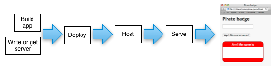
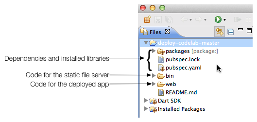
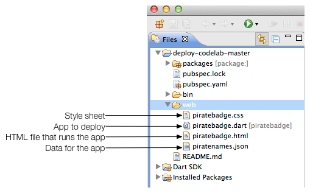
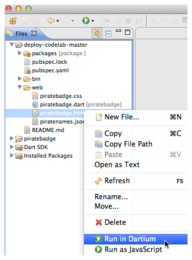
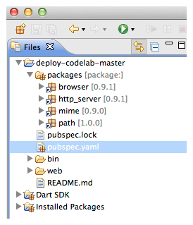
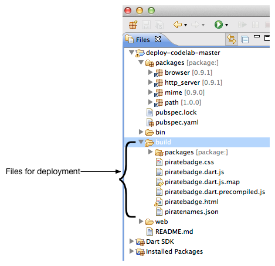
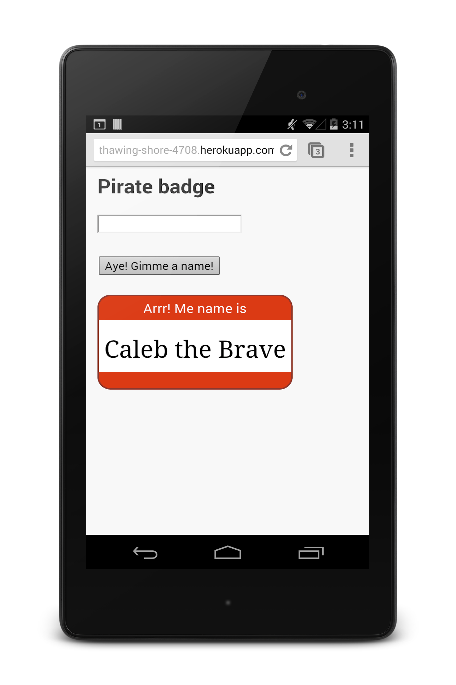
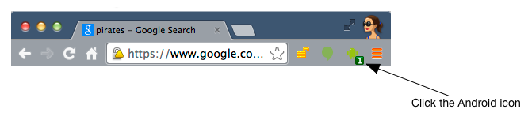
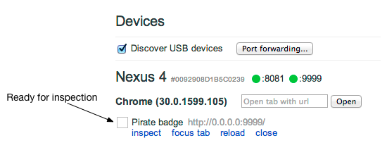
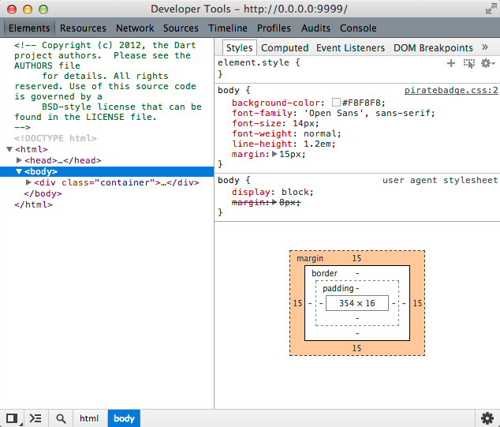

Please send feedback to dartbug.com.
In this code lab, you deploy an client application (web app) to the Heroku hosting service. This code lab focuses on the server-side programming aspect of this project.
Note: This code lab is for those who want to learn how to write a DIY server for deploying a web app. If you are not interested in server-side programming, this code lab is probably not for you. Perhaps you’d prefer the Avast, Ye Pirates code lab for building a web app.
To put your client app on the internet, you need to deploy it. For that, you need a client app, a web server, and a hosting service.

You can use any web server to serve your Dart client app. Because Dart can run on the server side, as well as on the client side, you can use Dart for both your client app and your web server. One benefit of doing so is that the client and web server can share code. The Dart Virtual machine (Dart VM) runs on Windows, Linux, or Mac systems.
Web Server—In this code lab, you learn how to build a web server in Dart that can serve static files (those that have no dynamic content). You use this web server to respond to HTTP requests for the web app’s pages.
Host—In addition to a web server, you need a host for your web app. Many public hosting services are available. We chose the Heroku hosting service for this project because it has a free tier and is easy to use.
Client App—As for the client app, you will be deploying the Pirate Badge web app from the Avast, Ye Pirates code lab.
Fun debugging on mobile devices—In addition, you learn how to use DevTools to inspect and debug your app on a mobile device.
In this step, you download Dart and get the code for the app that you will be deploying. This code lab uses Dart Editor.
If you haven’t already done so, get the Dart download.
Unzip the ZIP file, which creates a directory called dart.
(For more options, go to the download page.)
The Dart tools work in recent versions of , , or .
Go to the dart directory and double-click DartEditor.
Got questions? Having trouble? Go to the Troubleshooting Dart Editor page.
Download
the code for the app that you will be deploying.
Unzip the ZIP file,
which creates a directory called deploy-codelab-master.
In Dart Editor,
use File > Open Existing Folder…
to open the deploy-codelab-master directory.

Note:
If you see red X’s at the left of the
filenames,
the packages are not properly installed.
Right click pubspec.yaml and select Pub Get.
Key Information
The packages directory contains links to 3rd party libraries.
Those libraries are defined as dependencies in the pubspec.yaml file.
The pubspec.lock file lists the currently installed
versions for those libraries.
The web directory contains the Pirate Badge app to deploy.
The bin directory contains Dart scripts that run from the command line.
For example, scripts that run web servers live in bin.
Now is a good time to install some other prerequisite software and optional hardware. You have an opportunity to get them later as well.
For Step 4: (optional step)
For Step 5:
Open the code for the Pirate Badge web app and run it locally.
web directory.In Dart Editor, expand the web directory
by clicking the little arrow
to the left of its name.
The directory contains four files:

piratebadge.html.Double-click piratebadge.html to open it.
... <head> <meta charset="utf-8"> <title>Pirate badge</title><meta name="viewport"content="width=device-width, initial-scale=1.0"><link rel="stylesheet" href="piratebadge.css"> </head> <body> ...<script type="application/dart" src="piratebadge.dart"></script><script src="packages/browser/dart.js"></script>... </body> ...
Key Information
The <meta> tag sets attributes to
make the app scale correctly on mobile devices.
The first script tag identifies the script,
piratebadge.dart, that contains the web app.
dart.js is a script that determines if the browser supports Dart,
and if it does, runs the app natively.
If it does not, the script loads the JavaScript version of the app.
dart.js is part of the browser pub package.
Right-click piratebadge.html
and choose Run in Dartium from the menu.

Key Information
Dart Editor launches Dartium—a special build of Chromium that has the Dart Virtual Machine built in—and loads the app.
At this time, Dartium is the only browser that has the Dart VM built in. To run a Dart app in other browsers you need to convert it to JavaScript, which you do in the next step.
Key Information
The Pirage Badge app should appear.
Try out the app running to the left. Click the button or type in the text field to generate a pirate name.
In this step, you use pub build
to generate the assets for the app and put them into a new directory named
build. In addition to other tasks, this process generates minified JavaScript
that works in any modern browser.
Double-click the pubspec.yaml file to open it.
Click the Source tab at the bottom of the editing pane.
The list under dependencies lists the packages that this app requires.
The pub command installs these packages.
pub might install multiple packages directories, as needed.
name: deploy_codelab description: A sample deployment dependencies:browser: anyhttp_server: anypath: any
Key Information
A pubspec.yaml file in a directory identifies the directory
and its contents as a package.
pubspec.yaml provides meta-data for the application,
such as its name.
The pubspec.yaml file also lists the packages on which the app depends.
The three packages needed by this app are all hosted on
pub.dartlang.org.
any selects the latest possible package version that satisfies all the
dependencies.
In Dart Editor, expand the top-level packages directory.

Key Information
The packages directory contains the code for all of the dependencies
listed in the pubspec.yaml file.
These are installed automatically by Dart Editor.
The browser package contains the dart.js script
that checks for native Dart support.
The http_server package makes it easier to write HTTP server by providing a
high-level HTTP server API.
The path package provides common path manipulation operations,
such as joining, splitting, and normalizing.
The mime package is included because http_server depends on it.
You’re likely to see multiple packages directories. One is installed
for every subdirectory that needs it.
With pubspec.yaml still selected, select Tools > Pub Build.
The output looks something like this:
--- Jan 16, 2014 4:14:36 PM Running pub build ... --- Building deploy_codelab..... [Info from Dart2JS]: Took 0:00:06.811770 to compile deploy_codelab|web/piratebadge.dart. Built 10 files!
Key Information
pub build command creates a build directory that contains
everything your app needs to be deployed, including a minified
JavaScript file and the required packages.build directoryThe pub build command creates a build directory
under deploy-codelab-master.

Key Information
The piratebadge.dart.js file is a JavaScript file that has been minified.
When deployed, this file runs in the browser.
The packages directory contains the package dependencies.
Note that the build directory contains no piratebadge.dart file.
It is not needed to deploy the app to JavaScript.
Open the app.
Select File > Open File…
in a browser such a Firefox or Safari
and select the
deploy-codelab-master/build/piratebadge.html file.
Key Information
file protocol.
To share your app with others, you need to deploy the app to a hosting service,
such as Heroku.You can build full HTTP servers with Dart. The HTTP libraries and packages support serving both static files and dynamic responses. For this code lab, we focus on serving static files.
You need to provide a static file server for this project because Heroku requires one for deployment. Also, it’s fun to serve your Dart client app with a server built with Dart! The code you downloaded for this project contains a static file server. This step walks through the code for the static file server, which uses some interesting Dart APIs and two helpful pub packages.
Links to the relevant API docs are provided in Summary and Resources.
Double click bin/basic_http_server.dart to open it. The beginning of
the code is as follows:
import 'dart:io' show File, HttpServer,Platform; import 'dart:async' show runZoned; import 'package:http_server/http_server.dart' show VirtualDirectory; import 'package:path/path.dart' showjoin, dirname;void main() {// Assumes the server lives in bin/ and that `pub build` ran.var buildUri = Platform.script.resolve('../build');... }
Key Information
This code assumes that pub build has run, because it relies on the build
directory existing.
In the next step, you will configure a Heroku buildpack (a collection of
scripts) that runs pub build when you upload your app.
This code uses resolve to get the URI of the build directory based on the
path of the running script.
The top-level Platform object provides information about the environment in
which the application is running.
Here, Platform.script returns the absolute URI of the script being run.
piratebadge.html.import 'dart:io' showFile, HttpServer, Platform; import 'dart:async' show runZoned; import 'package:http_server/http_server.dart' showVirtualDirectory;import 'package:path/path.dart' show join, dirname; void main() { ...var staticFiles = new VirtualDirectory(buildUri.toFilePath());staticFiles..allowDirectoryListing = true;..directoryHandler = (dir, request) {// Redirect directory-requests to piratebadge.html file.var indexUri = new Uri.file(dir.path).resolve('piratebadge.html');staticFiles.serveFile(new File(indexUri.toFilePath()), request);};... }
Key Information
The VirtualDirectory class from the http_server package provides a
high-level interface for serving static files and directory listings.
This code overrides the directory index requests to serve piratebadge.html,
which is the main HTML file for this app.
The serveFile method serves the requested static file to the client.
The http_server package enables writing more concise code. The lower-level
APIs provided by dart:io would require making use of HttpServer,
HttpRequest, HttpResponse classes.
import 'dart:io' show File, HttpServer,Platform; import 'dart:async' show runZoned; import 'package:http_server/http_server.dart' show VirtualDirectory; import 'package:path/path.dart' show join, dirname; void main() { ...var portEnv = Platform.environment['PORT'];var port = portEnv == null ? 9999 : int.parse(portEnv);... }
Key Information
Heroku uses variable ports. Heroku sets the $PORT environment variable
with the port number that your app should listen to.
This code uses the port specified in the $PORT environment variable,
if present. Otherwise, it uses port 9999.
The $PORT environment variable might not be present if the web server is
running outside of the Heroku environment.
runZoned().import 'dart:io' show File, HttpServer, Platform; import 'dart:async' showrunZoned; import 'package:http_server/http_server.dart' show VirtualDirectory; import 'package:path/path.dart' show join, dirname; void main() { ...runZoned(() {...},onError: (e, stackTrace) => print('Oh noes! $e $stackTrace'));}
Key Information
runZoned helps provide stability to your program.
It catches exceptions from all call stacks within its bounds,
allowing your program to continue running in spite of errors.
import 'dart:io' show File,HttpServer, Platform; import 'dart:async' show runZoned; import 'package:http_server/http_server.dart' show VirtualDirectory; import 'package:path/path.dart' show join, dirname; void main() { ... runZoned(() {HttpServer.bind('0.0.0.0', port).then((server) {server.listen(staticFiles.serveRequest);});}, onError: (e, stackTrace) => print('Oh noes! $e $stackTrace')); }
Key Information
HttpServer.bind() creates an HTTP server, which responds to HTTP requests
for this app.
The HTTP server binds to a host 0.0.0.0.
which is a special address that is guaranteed
to receive requests from any network socket.
If you don’t know what specific IP to listen to, you can use 0.0.0.0.
A Stream provides an asynchronous sequence of data. Using the
listen() method, a stream client
registers a callback function that gets called when
data is available.
HTTP requests are served over a stream.
Here, the VirtualDirectory object named staticFiles
provides the callback function for the HTTP requests.
In Dart Editor,
right click bin/basic_http_server.dart and select Run.
Dart Editor brings up a new output pane in which the web server
displays its output, if any.
Now, open 0.0.0.0:9999 in your browser
(or, on Windows, open 127.0.0.1:9999).
The app appears and you can generate pirate names.
Leave the web server running.
Key Information
0.0.0.0:9999 requests the root directory of that host and port.
The static file server resolves that request to piratebadge.html
and returns the contents of that file.
0.0.0.0:9999 requests work only on your local machine. Another machine cannot run your app using that URL. In Step 5, you deploy your app to Heroku, which gives you a public URL.
Before deploying your app, you can use the Chrome DevTools to check, debug, and modify your app on a mobile device. DevTools can debug Android devices natively and other devices using Mobile Emulation. This section shows you how to use DevTools with your app on an Android device.
You don’t need to do this step to deploy your app. You can skip and move on to Step 5. However, this does help you to test and debug your app on mobile devices and it’s pretty cool.
Follow the instructions at Remote Debugging Chrome on Android to set up your device, Chrome, and your computer.
Make sure your web server is still running from Step 3.
On your mobile device, bring up Chrome,
and open 0.0.0.0:9999 in your browser.

In Chrome on your computer,
click the Android icon at the right side of any window
and select View Inspection Targets.
As of Chrome 32,
you can just visit about:inspect and verify
that Discover USB Devices is checked.

The Devices page appears and an entry for your app appears.
Note the green dots. Make sure that one of them has the label :9999.
If not, you need to click the Port forwarding… button
and turn on port forwarding for 0.0.0.0:9999.

On the Devices page, click inspect under the entry for your app.
A DevTools window appears that is attached to your app running
on the mobile device.
You are now inspecting the client app running on your mobile device.

Experiment by using DevTools to modify the font size or color. The change happens instantly on your mobile device.
In this step, you deploy your web server and app to Heroku. Heroku is a cloud hosting service that has a free tier and can run arbitrary VMs, which is why we’re using it here.
Follow Steps 1, 2, and 3 at Getting Started with Heroku to download the Heroku tools and get an account with Heroku.
ProcfileIn the deploy-codelab-master directory, create a file
named Procfile and add the following line to it.
web: ./dart-sdk/bin/dart bin/basic_http_server.dart
Key Information
A Procfile tells Heroku what part of your app can be executed.
The Procfile for this example defines a web process type
in which the dart VM runs the static file server.
deploy-codelab-master git repogit is a software configuration management system
and the means for deploying apps to Heroku.
If you don’t already have git, you need to download it.
Refer to the
git website
for downloads and documentation.
Before you can push an app to Heroku,
you need to initialize a local git repo and commit your files to it.
$ cd deploy-codelab-master $ git init $ git add -A . $ git commit -am "Hoist the mizzen!" $
Key Information
With git init you create a local repo.
Next, git add adds the specified files to the local repo.
Finally, git commit saves the files to your local git repo.
Important: Replace
myfirstdartappforheroku with something unique.
$ heroku create myfirstdartappforheroku -s cedar
$ heroku labs:enable user-env-compile
$ heroku config:set DART_SDK_URL=https://github.com/selkhateeb/heroku-vagrant-dart-build/releases/download/latest/dart-sdk.tar
$ heroku config:add BUILDPACK_URL=https://github.com/igrigorik/heroku-buildpack-dart.git
$
Key Information
With the first command, heroku create, you create a Heroku app
with the specified name.
Provide it with a unique name (not myfirstdartappforheroku).
Enabling user-env-compile allows environment variables
to be passed to the build script during deploy.
Official builds of Dart do not support Heroku due to mismatched glibc versions.
The DART_SDK_URL specifies
the (unsupported) Vagrant Dart Build,
which is a special build of the Dart SDK that is compatible with Heroku.
A buildpack extends Heroku. The buildpack used here extends Heroku
to support Dart apps. The location of the buildpack
is specified with the BUILDPACK_URL.
Type the git push command as shown.
Some output has been replaced with ellipses to save space,
but the output from the push command will look something this:
$git push heroku masterInitializing repository, done. ... -----> Fetching custom git buildpack... done -----> Dart app detected ... Dart VM version: 1.0.0.5_r30248_vagrant (Thu Nov 14 13:43:29 2013) on "linux_x64" ... *** Running pub build Building with "pub build" Building deploy_codelab.................... [Info in Dart2JS]: Generated deploy_codelab|web/piratebadge.dart.js (97701 characters) in 0:01:19.685114 Built 6 files! ... -----> Launching... done, v6http://myfirstdartappforheroku.herokuapp.com deployed to HerokuTo git@heroku.com:myfirstdartappforheroku.git * [new branch] master -> master $
Key Information
Your local git repository becomes associated with a remote Heroku repository,
usually named heroku, when you push.
Every time you push, Heroku runs the buildpack that you specified.
In addition to other tasks, this buildpack runs pub build.
When the push is finished, the process displays a URL for your app.
$ heroku ps:scale web=1 $
Key Information
Now that your app is deployed, you can run it on the web and on a mobile device.
Key Information
http://myfirstdartappforheroku.herokuapp.comKey Information
http://myfirstdartappforheroku.herokuapp.com
Share your Heroku URL with your followers and circles.
Now that your app is deployed for the world to use, what do you do now? Here are some suggestions.
If you never went through the Avast, Ye Pirates code lab, do it now.
For more command-line application and server code, visit Dart by Example and the samples page.
Learn more about command-line apps and servers, read the tutorials, in particular the command-line app tutorial and Get Input from a Form, which contains an HTTP server.
For more information about the tools and libraries used in this code lab, check out these resources.
This code lab provided a small example of a static file server. You learned some interesting features of Dart, the Dart SDK, some Dart tools, and a few pub packages:
runZoned() keeps your program running in spite of exceptionsHttpServer.bind() creates an HTTP server and binds it to a host and portlisten() registers a callback function for Stream eventsPlatform provides system environment informationFile represents
VirtualDirectory makes HTTP operations easier
pub get installs packagespub build builds an app for deploymentpub build generates JavaScript so your app can run on any modern browser